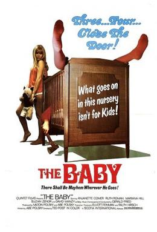

Ted Post
1973
89 minutes
You wouldn't normally watch a film about an actual baby. But this film is about an adult baby, which somehow makes you want to watch it more, you sicko.
For better or for worse, this movie leans more into the grotesque than the depraved. There's no sexual enjoyment to be had with this adult baby. We simply have a grown man who never grew up and has been treated as a literally goo-goo gaga baby for his entire life, pushing around toy trucks and sleeping in a crib and of course he's in diapers. Even more disturbing, his voice is dubbed over with sounds from a real baby, which is the absolute worst detail of this film.
This is going to be a hard watch. You're going to want your teddy bear and blankie for this one, and make sure you have some eye bleach on hand for afterwards.
Thankfully this film doesn't trigger any memories for you. You can only presume that era of your life was so traumatizing and full of things you'd prefer to forget that your brain has mercifully spared you of any memories of it. You were probably at peak cuteness then, but even the cute can be cringey at times.
Time to choose something different: